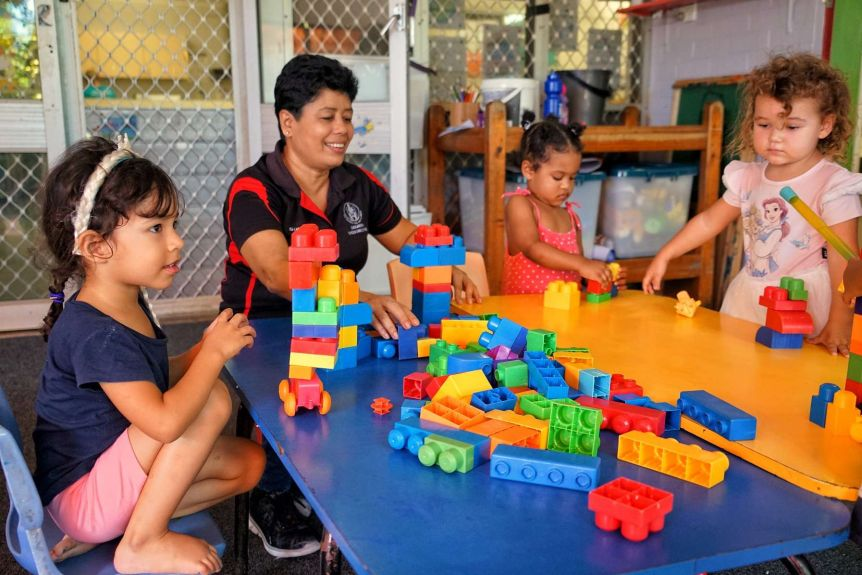
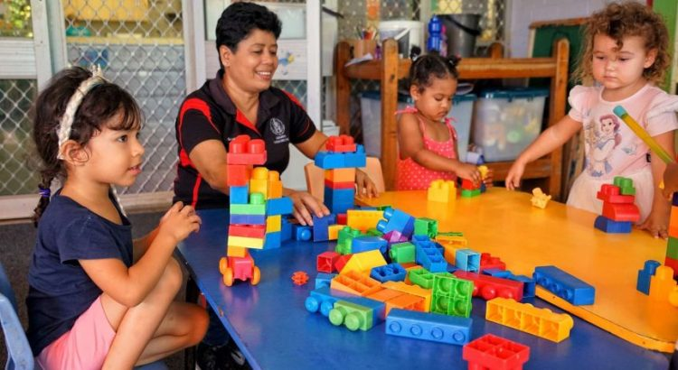
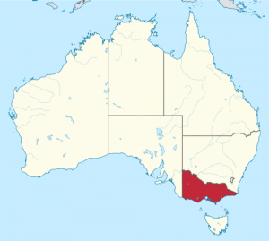

Victoria Unveils New Childcare Changes

As part of a series of tightening measures, the Victorian government will help reduce the number of children participating in child care services.The federal government will also provide additional funding to child care services, the federal government announced on Thursday.
All Victorian families with children enrolled in child care services may be allowed up to 30 days off work, but the federal minister said he could not force service providers to pay a gap fee while the child is living at home.
Prime Minister Scott Morrison said 'parents do not have to pay a transfer fee when their children do not go to school.'Less than an hour later, Education Minister Dan Tehan said, 'ultimately the decision to waive the gap fee is up to the provider themselves, but what this package does is incentivise providers to waive the gap fee.'
'We want those parents to keep their children enrolled because we know once we come out of this pandemic, they will need the care for their children so that they can go back to work,' Tehan added.
Victorian Premier Daniel Andrews said that from Thursday, August 6, Melbourne Child Education and Parenting Services will be provided only to children who are truly 'in need.'
Andrews, for his part, in a media briefing on Wednesday, said that parents and guardians have new access to 'child care license' that will allow them to continue to care for children.Mr Andrews said:
'If you are a permitted worker, regardless [of] whether you are working in person or from home and you attest that there is no-one else in your household that can look after your children, you will be able with that very simple permit to access child care.'
He added:
'There will be many, many families who will not be able to access child care as they normally would and that is essential to driving down movement, it is essential to driving down these numbers.'
Andrews apologized, saying parental restrictions would be 'a challenge for many families,' but said the goal was to curb human activity and reduce the spread of Coronavirus.
The federal government will provide an additional $32 million for child care services in Melbourne.However, the additional 30 days would apply to all Victorian families.
In addition to the 42 days of the entire existing child care subsidy system in Victoria, a person will have a leave for 30 days.'This means you should be able to enroll your children in school, but you can keep them in your home without punishment.'
He also urged the government to 'encourage centers to close the gap.'This is the difference in the total payment for families who need to keep their children at home.However, he acknowledged that the government had not been able to comply with the law.
Tehan said additional funds would be provided to child care providers to alleviate some of the financial implications of the crackdown.
The government has allocated $16.3 million to pay for the transition to Melbourne’s childcare services.At Melbourne Services, families will receive such payments at a rate of 30% of pre-COVID-19 income.
In the current transition arrangements (replacing last month’s employee pay), this share has increased by 25%.They will continue to provide regular child care subsidies for school children.
The government argues that the new funding for child care providers will 'provide additional support for hiring staff' – but has not yet begun a payroll program for child care workers.
Last month, the government said it had provided wage services, and also it had heard industry complaints that wage subsidies did not cover all workers, such as temporary workers and visa holders.
However, a union said that the so-called 'job security for child care workers' only 'requires workers to remain employed and does not do anything to prevent a massive wage break that could seriously harm workers.'
[bsa_pro_ad_space id=4]
Share on Facebook Tweet Follow us
Posted On: 2020-08-05T00:00:00
Posted By: Benedict Kasigara





Content Date: 2020-08-05
Download Date: 2021-07-09
Document ID: L0C04E9R9